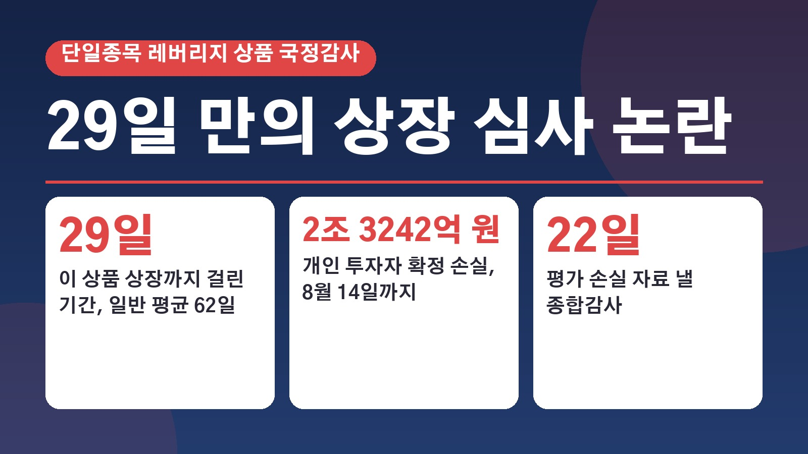
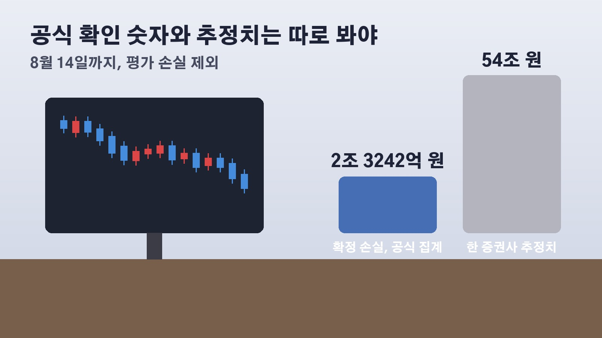

삼성전자 SK하이닉스 단일종목 레버리지 ETF, 국감에서 드러난 29일 만의 상장 심사와 개인 확정 손실 2조 3242억 원

요즘 증시가 크게 흔들리면서 삼성전자나 SK하이닉스 레버리지 상품을 들고 계신 분들은 이 상품이 어떻게 이렇게 빨리 나왔는지, 손실 규모는 어디까지인지 궁금하셨을 거예요. 19일 국회 정무위원회의 금융감독원 국정감사에서 바로 이 단일종목 레버리지 ETF가 집중적으로 다뤄졌습니다. 금감원장이 어떤 답을 했는지, 심사가 어떻게 진행됐는지, 개인 투자자 손실은 얼마로 집계됐는지, 앞으로 남은 일정까지 차례로 정리해 볼게요.
단일종목 레버리지 ETF와 19일 국감에서 나온 답변
ETF는 상장지수펀드를 줄인 말이에요. 단일종목 레버리지 상품은 삼성전자나 SK하이닉스 같은 개별 종목 하나의 하루 주가 등락률을 두 배로 따라가도록 만든 상품이고, 반대로 움직이는 인버스 상품도 함께 나왔습니다. 지난 5월 27일 처음 출시됐어요.
국감에서 김재섭 국민의힘 의원은 상품 출시 뒤 검은 월요일부터 검은 금요일까지 기사가 쏟아졌다며 이 상품이 증시 변동성에 영향을 미쳤다고 보느냐고 물었고, 이찬진 금융감독원장은 일정 부분 있다고 본다고 답했어요. 다른 원인으로는 삼성전자와 SK하이닉스 원래 주식 자체의 심한 변동성을 들었습니다. 상품 출시를 적극적으로 막지 않은 데 대한 책임을 묻자 이 원장은 송구스럽게 생각한다고 했어요.
이 원장은 지난 6월 22일 기자간담회에서 드러누워서라도 막았어야 했나 하는 후회가 있다고 말한 적이 있는데, 이날 그 발언은 투자자들의 큰 피해가 예상되는 상황이라 투자자 경보를 위해 일부러 세게 한 말이었다고 설명했습니다.
29일 만의 상장, 예비심사가 끝나기 전에 시작된 심사
심사 절차도 도마에 올랐어요. 보통 ETF는 한국거래소의 상장예비심사를 마친 뒤 금감원이 증권신고서를 심사해 왔는데, 박대출 국민의힘 의원이 예비심사가 끝나기 전에 금감원 심사가 진행된 것은 이번이 처음 아니냐고 묻자 이 원장은 확인해 보니 그런 것 같다고 답했습니다. 이유로는 금융위원회가 상장 일정을 정책적으로 발표했고, 그 일정을 맞추려고 심사를 좀 빨리 한 부분이 있다고 했어요.
박 의원은 일반 ETF는 상장까지 평균 62일, 비교 대상 상품군은 43일이 걸렸는데 단일종목 레버리지 ETF는 29일에 불과했다고 주장했습니다. 실제로 금융위는 4월 21일 관련 시행령 개정안이 국무회의를 통과했다고 발표하면서 이르면 5월 22일 상장을 전망했고, 5월 15일에는 상장 예정일을 27일로 제시했어요. 금감원 황선오 부원장은 거래소 예비심사와 증권신고서 심사는 단계가 아니라 별개의 업무이고, 예비심사 자료는 증권신고서에 첨부되지 않는다고 덧붙였습니다. 다만 과거에는 예비심사가 끝난 뒤에 진행했다는 점은 인정했어요.
업계 반대 의견은 없었고, 150쪽 보고서는 읽지 못했다
상품의 위험성을 미리 얼마나 따져 봤는지도 질문이 이어졌어요. 최은석 국민의힘 의원은 금감원이 맡긴 연구보고서에 단일종목 레버리지 ETF의 구조적 위험성과 국내 도입에 신중해야 한다는 내용이 담겨 있었다고 지적했습니다. 150쪽 분량의 이 보고서를 읽어 봤느냐는 질문에 이 원장은 사실은 보지 못했다고 답했어요.

한편 박준태 국민의힘 의원이 받은 금감원 서면답변에 따르면, 금감원은 올해 1월 30일 이후 금융투자협회, 한국거래소, 증권사, 자산운용사, 연구기관 등에서 이 상품 출시를 걱정하거나 반대하는 의견을 전달받은 적이 없다고 밝혔습니다. 관련 규정 시행세칙의 개정 예고 기간에도 따로 들어온 의견이 없었고, 업계와 별도 간담회나 회의도 열지 않았다고 했어요.
개인 투자자 확정 손실 2조 3242억 원과 54조 원 분석
투자자들이 가장 궁금해하실 손실 규모예요. 금감원은 앞서 국회에 출시일인 5월 27일부터 8월 14일까지 10개 종합금융투자사업자 자료를 모은 결과 개인 투자자의 확정 손실이 2조 3242억 원이라고 보고했어요. 이 숫자는 실제로 팔아서 확정된 손실만 센 것이고, 아직 들고 있는 상품의 평가 손실은 빠져 있습니다. 이 원장은 이날 평가 손실 자료를 정리해 종합감사 전까지 내겠다고 했어요.
이와 별개로 씨티글로벌마켓증권은 지난달 28일 기관 투자자용 보고서에서 이 상품으로 인한 국민 피해가 54조 원에 이를 수 있다고 분석했습니다. 하지만 이억원 금융위원장은 8일 국감에서 이 분석은 공식 자료가 아니라 트레이딩 부서의 비공식 시장 논평이고 정확하지 않다고 했어요. 그래서 지금 공식적으로 확인된 숫자는 2조 3242억 원의 확정 손실이고, 54조 원은 한 증권사의 추정치로 보시는 게 맞습니다. 금감원은 증권사별 개인 매매손익 자료도 모으고 있는데, 일부 데이터에서 오류가 발견돼 검증이 늦어지고 있다고 밝혔어요.
7월 16일 보완대책과 22일 종합감사, 앞으로 볼 일정
금융당국은 출시 뒤 시장 변동성과 투자자 보호 문제가 커지자 7월 16일 단일종목 레버리지 ETF의 신규 상장을 잠정 중단하고, 이미 상장된 상품의 광고와 이벤트성 마케팅을 금지하는 보완대책을 내놨어요.
다음으로 지켜볼 날은 금감원과 금융위원회를 대상으로 한 종합감사가 열리는 22일이에요. 이 원장이 약속한 평가 손실 자료가 나오면 개인 투자자 손실의 전체 규모가 더 분명해질 것이고, 금융위와 금감원 사이에 오간 협의 내역 공개 요구에 어떤 답이 나올지도 관심이 모입니다.
참고한 기사: 이데일리 이찬진, 단일종목 레버리지 증시 변동성에 일정 부분 영향 송구 2026년 10월 19일, 아주경제 단일종목 레버리지 ETF 심사 졸속 지적, 금감원 업계 우려 의견 없었다 2026년 10월 19일, YTN 이찬진, 단종레 ETF 심사 속도전에 상장 일정 맞추려 2026년 10월 19일, 데일리안 단일 레버리지 피해 규모 54조, 이찬진 종감 전까지 제출 2026년 10월 19일
태그
단일종목레버리지ETF 레버리지ETF 삼성전자레버리지 SK하이닉스레버리지 금감원국정감사 이찬진금감원장 상장심사 개인투자자손실 ETF투자 종합감사